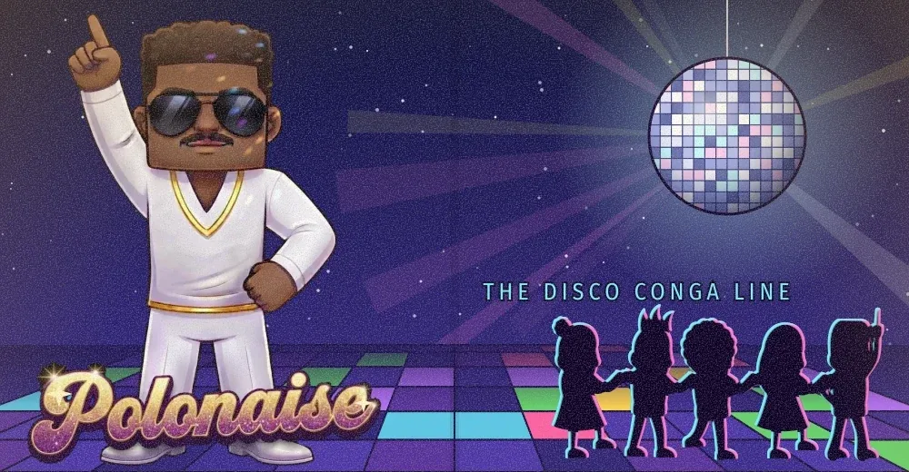

How to dance
- Pick a direction. The line waits for the first step, then dances to the beat.
- Touch the guests. Every guest you touch joins the end of the line – one after the other for a combo up to ×5.
- Catch the shy ones. They run when you come close. Golden stars are worth 500 points.
- Don't crash. A wall, a table or your own line costs a life and half of the polonaise.
- Fill the line. Enough dancers clear the song – the next one is longer and faster. Endless songs.

Grab a shoulder. Join the line!
The club is packed, the DJ is spinning and the mirror ball is turning. Polonaise Guy leads the polonaise – and now the dance floor fits in your pocket.
A DISCOWARE release
Take it with you
The ROM runs in any Game Boy emulator – mGBA, SameBoy, BGB – and on real hardware with a flash cartridge. The handheld on this page is a small emulator written in plain JavaScript just for this game: no plugins, nothing loaded from other servers.
Download polonaise.gb